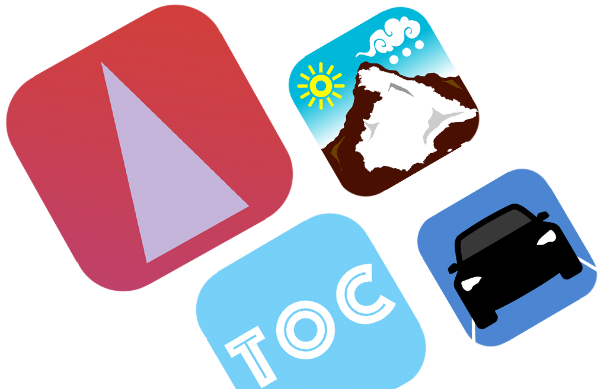

DESCUBRE LAS APLICACIONES PARA IOS
Apps disponible en App Store
Con The Other Contacts podrás almacenar los contactos no personales que necesites tener guardados. Separa de la agenda principal de tu teléfono los contactos que no quieres que vean tus historias de WhatsApp, ni te salgan en las sugerencias de amigos en diferentes redes sociales.
Más informaciónDescargar The Other ContactsDispón directamente en la palma de tu mano la información a tiempo real sobre el estado de la red de carreteras españolas. Incidencias, cámaras, sensores meteorológicos, radares, e información sobre los precios en todas las gasolineras españolas.
Descargar InfoDGTToda la información sobre la Semana Santa de Valladolid, una de las mejores de España. Procesiones por días, datos sobre las cofradías, incidencias en el tráfico de la ciudad, y mucho más...
Más informaciónDescargar Semana Santa Valladolid